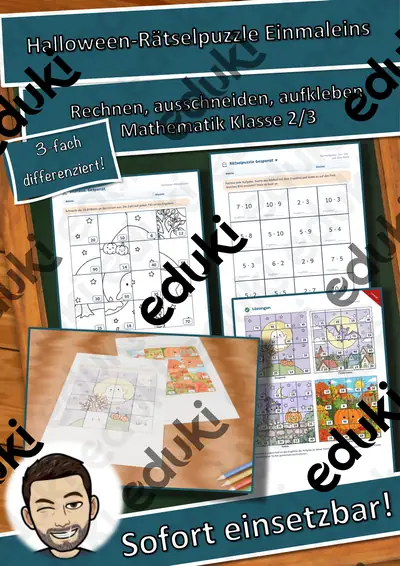
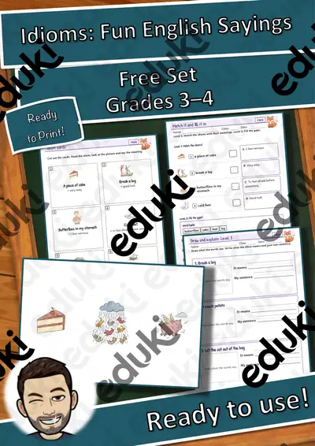

Lesespur: Filmmusik: wie Musik Bilder lenkt – Lesespurgeschichte mit Rätseln (Klasse 9)
Filmmusik – wie Musik Bilder lenkt – Lesespurgeschichte Musik (Klasse 9)Begib dich mit deiner Klasse auf eine spannende Lesespur hinter die Kulissen der Filmmusik! Emely und Carlo besuchen mit ihrem Musikkurs einen Workshop in einem Filmstudio: Im Stummfilmkino spielt ein Pianist live zu flimmernden Bildern, im Stimmungsraum läuft dieselbe Szene einmal mit heiterer und einmal mit düsterer Musik, in der Motivwerkstatt entsteht ein Leitmotiv für eine Heldin. Im Trickfilmstudio folgt die Musik jeder Bewegung einer hüpfenden Katze, im Spannungskeller zittern tiefe Streicher, im Geräuschstudio werden Schritte und knarrende Türen nachträglich gemacht – und im Aufnahmesaal spielt ein Orchester zum laufenden Film, bevor die Klasse selbst eine Szene vertont. Ihre Filmklappe Klappo ist immer dabei. Am Ende jedes Abschnitts verrät ein Hinweis den nächsten Ort auf dem Studioplan – nur wer genau liest, findet den Weg und sammelt alle geheimen Buchstaben zum Lösungswort.
Die perfekte Lesespur für den MUSIKUNTERRICHT der 9. Klasse – ideal als Einstieg in das Thema Musik und Medien: Sie verbindet sinnentnehmendes Lesen mit Fachbegriffen der Filmmusik und einem kritischen Blick darauf, wie Musik unsere Gefühle lenkt. Das Material ist SOFORT EINSETZBAR und in DREI DIFFERENZIERUNGSSTUFEN (leicht ★ / mittel ★★ / schwer ★★★) angelegt.WICHTIG: Das komplette Material ist sowohl in FARBE als auch in SCHWARZ-WEISS enthalten – ideal zum Sparen von Druckkosten.DAS IST ENTHALTEN
- Lesespurgeschichte in 3 Niveaus (leicht, mittel, schwer)
- farbiger Studioplan als Suchkarte
- Hörverstehen mit QR-Code zur MP3 (selbstständiges Hören mit Kopfhörern)
- vier Aufträge auf dem Weg: eine Zuordnung, ein Quiz, eine Rechenaufgabe und ein Steckbrief
- Rätselseite (Wörter-Suchsel + Fragen)
- Ausmalbild zum Thema (Orchester vor dem Bildschirm)
- ausführliches Lösungsblatt für die Lehrkraft
- alles zusätzlich als komplette Schwarz-Weiß-VarianteSO GEHT DIE LESESPURDie Jugendlichen lesen ab START, finden im Text den nächsten Ort, suchen ihn auf dem Studioplan und lesen bei dieser Station weiter. An jeder richtigen Station gibt es einen Buchstaben. Eingebaute Sackgassen (Kantine, Requisitenlager, Parkplatz, Schneideraum) sind keine Stationen und dienen der Selbstkontrolle. Am Ende werden die gesammelten Buchstaben umgestellt und ergeben ein geheimes Lösungswort. (Die Lösungen sind selbstverständlich nur im Lösungsblatt für die Lehrkraft enthalten.)INHALTLICHER SCHWERPUNKTDie Jugendlichen lernen die Geschichte der Filmmusik vom Stummfilm bis heute kennen, beschreiben Funktionen wie Stimmung, Spannung und Charakterisierung, erklären Leitmotiv, Mickey-Mousing und die Unterscheidung von Musik im Bild und aus dem Off und erfahren, wie Geräusche und Orchesteraufnahmen passgenau zum Bild entstehen.ABGEDECKTER LEHRPLAN (Klasse 9, Musik)
- Musik (LehrplanPLUS Bayern) – Jahrgangsstufe 9 „Musik und Medien / Filmmusik“: Funktionen und Gestaltungsmittel von Filmmusik kennen, ihre Wirkung beschreiben und eine Szene selbst vertonen.
- Deutsch – Lesen und mit Texten umgehen: Sachinformationen gezielt entnehmen; Zuhören: einem Sachhörtext konzentriert folgen (Hörverstehen mit MP3).
- Mathematik – Multiplikation, Rechnen mit Zeiteinheiten.
- Fächerübergreifend / Kompetenzen: Medienbildung (Wirkung von Medien), Deutsch (Film als Text), Berufsorientierung Medien, genaues Lesen und Prüfen, kreatives Gestalten (Ausmalbild).
Geeignet für Freiarbeit, Stationenlernen, Vertretungsstunden, Wochenplan, Projekttage und Distanzunterricht. Klassenstufe 9.
Ähnliche Materialien

Lesespur: Die Zaubershow: Hinter den Kulissen der Magie – Lesespurgeschichte mit Rätseln (Klasse 5)

Lesespur: Bildsprache der Werbung: wie Bilder überzeugen – Lesespurgeschichte mit Rätseln (Klasse 10)

Mark Forster Lückentext mit Wortspeicher Hörverstehen und Suchsel

Auge Lückentext mit Wortspeicher Hörverstehen und Suchsel

Form folgt Funktion Lückentext mit Wortspeicher Hörverstehen und Suchsel

Halloween-Rätselpuzzle Einmaleins – Gespenst, Fledermaus, Katze und Kürbis, 3-fach differenziert mit Selbstkontrolle (Klasse 2/3)

English Workshop: Idioms: Fun English Sayings – free, Grades 3–4